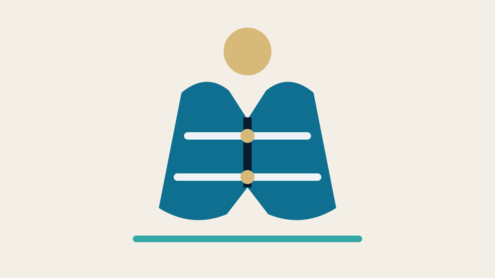

Editorial disclosure: Recommendations are chosen for fit, safety and long-term usefulness. Retail links may be affiliate links, which can support Nautical Dream without changing the price you pay or our editorial judgment. Specifications and prices change; verify the exact model and package before ordering.
Affiliate disclosure: Nautical Dream may earn a commission from qualifying purchases made through marked retail links, at no additional cost to you. Recommendations remain editorially independent. As an Amazon Associate I earn from qualifying purchases.
A legal inventory and a safe boat are not the same thing. The life jackets may be Coast Guard approved, in good condition and technically reachable, yet buried beneath beach bags while the passengers who need them are already in the water. Buying well begins with a person, an activity and a decision to wear the device before the emergency.
The category recommendations
Quality foam boating vest
An inherently buoyant vest from an established maker such as Stohlquist, Onyx or Mustang is simple, inspectable and ready without an inflation mechanism.
- Immediate buoyancy
- Easy annual inspection
- Bulkier in a seat
Activity-cut paddling PFD
Large arm openings, a shorter torso and thoughtful pocket placement keep a paddler moving without taking the jacket off.
- Better range of motion
- Comfort encourages wear
- Must match the exact activity
USCG-approved inflatable PFD
A properly selected Mustang Survival, Onyx or similar inflatable can be comfortable enough to wear all day, but only for eligible users and with disciplined maintenance.
- Low bulk when uninflated
- Comfortable at the helm
- Requires inspection and rearming
We recommend categories before exact models because body shape and activity change the answer. Two adults of the same weight can need different cuts. A child’s jacket is selected by the label’s weight range and tested fit—not by age or a plan to “grow into it.”
Who should buy what
| User | Best starting type | Why | Avoid |
|---|---|---|---|
| Family powerboater | Comfortable foam vest | Simple and ready immediately | Bulky emergency-only jackets nobody wears |
| Child | Child-specific foam vest with correct weight label | Secure fit and reliable buoyancy | Adult vest or oversized “room to grow” |
| Paddler | High-mobility paddling PFD | Arm and torso freedom | Vest that rubs during the stroke |
| Eligible adult cruiser | Inflatable worn continuously | Low bulk and comfort | Unmaintained device stored instead of worn |
| Cold or rough water crew | Higher-buoyancy activity-appropriate device | More demanding rescue environment | Minimum-buoyancy comfort purchase without planning |
Approval label and activity come first
Read the complete U.S. Coast Guard approval label. Modern labels use performance levels and icons; older approved devices may use Type designations. The label identifies intended use, user size and limitations. Some inflatables are approved only when worn. Certain devices are not approved for high-speed activity, personal watercraft, whitewater or children.
Do not remove or obscure the label. If it becomes unreadable, the device may no longer provide the information needed to establish serviceability. State rules can require children to wear life jackets at ages or under conditions beyond federal minimums. Check the law where the boat operates.

Fit test for adults
Fasten every zipper, buckle and adjustment. Tighten from the lower straps upward so the device sits securely without restricting breathing. Raise both arms. Have another person lift at the shoulders. The jacket should not ride over the chin or ears. Turn, sit and mimic the movement used aboard.
Test in shallow, controlled water when the manufacturer permits. Body composition and clothing influence flotation angle. A device that feels fine in a store may push against a high seatback or interfere with the throttle. Try it in the actual boat before committing the entire family to the same model.
Children: no room-to-grow sizing
Use the manufacturer’s weight range and fit instructions. An oversized vest can rise around a child’s head or allow the body to slip out. Adult devices do not work as child substitutes. Features such as crotch straps, head support and grab handles are useful when appropriate to the size and design, but they must be adjusted correctly.
Make the jacket part of boarding, not an argument after departure. Let the child choose among approved colors or cuts that fit. Recheck after a growth spurt and at the start of every season. A faded hand-me-down with compressed foam and a missing label is not economical.
Foam versus inflatable
Foam provides buoyancy without action and tolerates neglect better, though it still requires inspection and proper storage. It is bulky but predictable. Inflatable devices reduce bulk and can be extremely wearable for adults, yet they depend on an intact bladder, correct cylinder, functioning mechanism and compliance with label conditions.
An automatic inflatable may deploy when immersed; a manual unit requires action. Neither is a universal answer. Someone knocked unconscious, a weak swimmer or an operator in cold rough water may need different performance than an experienced adult on a protected-water cruise. Read the label and manufacturer guidance before deciding comfort outweighs simplicity.
Inflatable maintenance is not optional
The Coast Guard’s federal boating guide emphasizes that inflatables need regular attention: a full cylinder, green status indicators and a serviceable mechanism. Follow the manufacturer’s inspection interval. Open the cover, inspect the bladder, oral tube, inflator, cylinder and fabric, then repack exactly as directed.
After inflation, rearm with the correct manufacturer kit. Similar-looking cylinders and bobbins are not automatically compatible. Record service dates on a tag or vessel checklist. An inflatable stored damp can develop corrosion or mildew. A device past a cartridge date or showing red status should be removed from service until corrected.
Budget recommendation
For ordinary family powerboating, spend on comfortable foam vests that each person will wear rather than one premium captain’s inflatable and a pile of generic emergency jackets. Established manufacturers offer adult recreational vests in accessible price bands. Choose visible colors, smooth edges and buckles the wearer can operate.
Budget also for children’s replacements as they grow and at least one throwable device where required. A lower price is not a concern when approval, fit and condition are right. The dangerous economy is buying a universal adult four-pack that fits nobody well enough to keep on.
Premium recommendation
For an eligible adult who dislikes bulk and will maintain it, a high-quality automatic inflatable from Mustang Survival, Onyx or another established maker can be worth the premium. Choose buoyancy and harness features for the operating environment. Offshore or sailing harness systems introduce tether and jackline considerations beyond ordinary family boating.
Premium foam paddling vests are also worthwhile when sculpted panels, ventilation and pocket placement keep the user wearing the device. The premium should buy better fit, materials and serviceability—not decorative branding.

Storage and care
Rinse salt and grime with fresh water as directed, then dry thoroughly out of direct heat before storage. Hang or lay flat in a ventilated location. Do not compress foam beneath heavy gear, use a life jacket as a kneeling pad or leave it wet in a sealed compartment. Petroleum products, harsh cleaners and mildew damage materials.
Keep worn life jackets accessible and spare approved devices visible, not buried. Guests should know where they are and which one belongs to them. At season’s end, clean and inspect every jacket before deciding it deserves another year.
Common failure modes
Foam devices fail through torn fabric, broken hardware, compressed or waterlogged flotation, faded unreadable labels and mildew. Inflatable failures include empty or loose cylinders, expired or damaged activation components, red status indicators, punctured bladders and incorrect repacking. Whistles and lights can also expire or disappear.
The Coast Guard advises annual testing of foam devices for wear and buoyancy and manufacturer-directed maintenance for inflatables. When condition is questionable, replace or professionally service the device. Life-safety gear is a poor place for optimistic interpretation.
Long-term ownership costs
Foam jackets mainly cost cleaning, storage space and eventual replacement. Children outgrow them quickly. Inflatables require rearm kits after use and periodic replacement components even when never deployed, depending on the model. Add water-activated lights, whistles or harness inspection when the operating area demands them.
A life jacket that costs twice as much but gets worn on every trip has better value than a cheap vest under a seat. Track purchase date, size, assigned user and service schedule. That small inventory prevents a family from discovering five minutes before launch that the youngest child has outgrown the only suitable device.
Buying mistakes
- Buying by age instead of the child’s current labeled weight range.
- Assuming “universal adult” means comfortable for every adult.
- Choosing an inflatable for an ineligible user or activity.
- Storing inflatables for years without opening and inspecting them.
- Using dark, low-visibility colors when high visibility would help rescue.
- Carrying legal spares so deeply buried they are not readily accessible.
Make every purchaser try the jacket while seated and moving. The device that rubs the neck in the store will not become more comfortable after three hours in sun.

Alternatives and activity-specific choices
Fishing vests add pockets and high-back designs for pedestal seats. Kayak and canoe PFDs prioritize paddle movement. Tow-sport vests need the appropriate approval and construction for repeated impact. Offshore sailing and rough-water use may justify higher buoyancy, spray protection or integrated harness systems.
Do not force one vest to do every job. A low-bulk helm inflatable and a foam paddling vest can both belong to the same person. The correct device is selected for today’s activity and worn before exposure begins.
Expert recommendation and final verdict
For most families, start with individually fitted foam vests in comfortable cuts and visible colors. Add child-specific designs by current weight. Give paddlers an activity-specific vest. Offer an inflatable only to an eligible adult who understands inspection, rearming and the requirement to wear it.
Final verdict: the best life jacket is approved for the activity, fitted to the person, in serviceable condition and already on. Brand matters less than those four facts. Spend whatever is necessary to remove the excuse for taking it off.
Frequently asked questions
How should a life jacket fit?
Fasten and adjust it, raise both arms and have another person lift at the shoulders. It should remain secure without riding over the chin or ears. Follow the manufacturer's fit test.
Can children wear adult life jackets?
No. The Coast Guard states that adult life jackets will not work for children. Use a child-specific approved device within the labeled weight range.
How often should an inflatable life jacket be serviced?
Inspect it at the interval in the manufacturer's instructions and before use. Check the cylinder, status indicator, bladder and activation components, and rearm after inflation.
Are inflatable life jackets approved for every activity?
No. Labels can restrict age, activity and whether the device must be worn. Many are inappropriate for children, personal watercraft or high-speed water sports.
When should a foam life jacket be replaced?
Replace it when fabric, foam, buckles or label are damaged, when it is waterlogged or faded, or when it no longer provides proper fit and buoyancy.